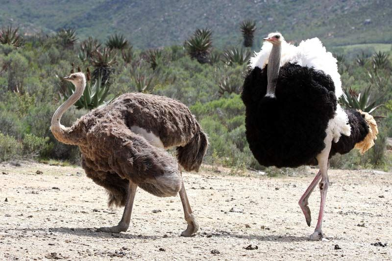

|  |
Ostriches are large, flightless birds that have long legs and a long neck that protrudes from a round body. Males have bold
black-and-white coloring that they use to attract females. Females, on the other hand, are light brown. Ostriches are bigger than
any other bird in the world. They can grow up to 9 feet (2.7 meters) tall and can weigh up to 320 lbs. (145 kilograms), according
to the African Wildlife Foundation, and an ostrich's eyes are 2 inches (5 centimeters) in diameter — the largest of any land animal.
The ostrich is the only bird that has two toes on each foot. All other birds have three or four toes, according to the American
Ostrich Association.Wild ostriches live in the dry, hot savannas and woodlands of Africa. They once roamed all over Asia, Africa
and the Arabian Peninsula, but because they have been hunted so extensively, wild ostriches' range has been reduced to sub-Saharan
Africa, according to the University of Michigan Museum of Zoology. However, ostriches can be found in captivity all over the world.
Ostriches are omnivores, which means they eat both vegetation and meat. Although they prefer plants — especially roots, seeds and
leaves — they also eat locusts, lizards, snakes and rodents, according to the San Diego Zoo. They also eat sand and pebbles, to help
grind up their food inside their gizzard, which is a small pouch where food is crushed and ripped up before it reaches the stomach.
Ostrich eggs are 6 inches (15 cm) in diameter and can weigh up to 3 lbs. (1.3 kg). Eggs are laid in a communal nest called a dump
nest, which can hold about 60 eggs at one time. Males, as well as females, sit on the eggs until they hatch, which can take 42 to 46
days. Ostrich offspring are larger than any other bird baby. At birth, chicks can be as big as chickens. The males and females share
the responsibility of taking care of the young, according to the San Diego Zoo. During an attack, the male tries to lure the predator
away from the chicks while they run for cover with the female.By six months, a chick is almost at its full-grown height; at 3 or 4
years, it will reach maturity. An ostrich can live 50 to 75 years.
|